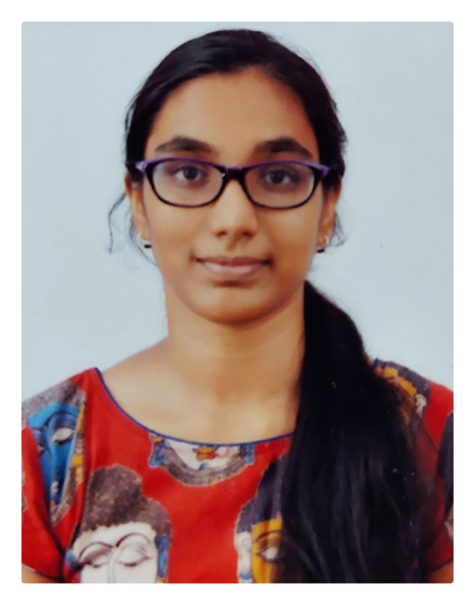

Neha Kakarla

Hobbies
Contact Me
Career Objective
Looking to begin a career at a technology-driven organization where my knowledge on technical, design, integration and problem-solving skills can be put to use as well as to understand and analyze the new advancements in our field.
Education
- VNR Vignana Jyothi Institute of Engineering & Technology
- Bachelor of Technology - CSE
- 2020 - 2024
- Sri Chaitanya Junior College
- Intermediate - Mathematics, Physics, Chemistry
- 2018 - 2020
- Kennedy High the Global School
- High School Diploma
- 2006 - 2018
Work Experience
Data Informatics Analyst - ServiceNow
- June, 2023 - August, 2023
- Contributed in identifying, reporting & automating synchronization issues between 2 major platforms at ServiceNow.
- This report was consumed by the senior most management including VPs, Senior Directors and Directors.
- Technology Stack: Snowflake, Python, PowerBI
Angular Developer - Fosterate
- Nov, 2021 - May, 2022
- Contributed in developing an admin app.
- Basic functionalities include: adding townships, providing services, creating
accounts, adding vehicles, autocompleting vehicle details, payment gateway
- Technology Stack: Angular, Firebase
Skills
- Programming & Modelling Languages: C, C++, Python, Java, R,Javascript, TypeScript
- Web & Mobile Development: HTML5, CSS3, Bootstrap, ReactJs, Flutter, Angular
- Tools & Frameworks: AutoCAD, MATLAB, PowerBI
- Storage & Deployment: RDBMS, SQL, Snowflake, MongoDB, Firebase, Git